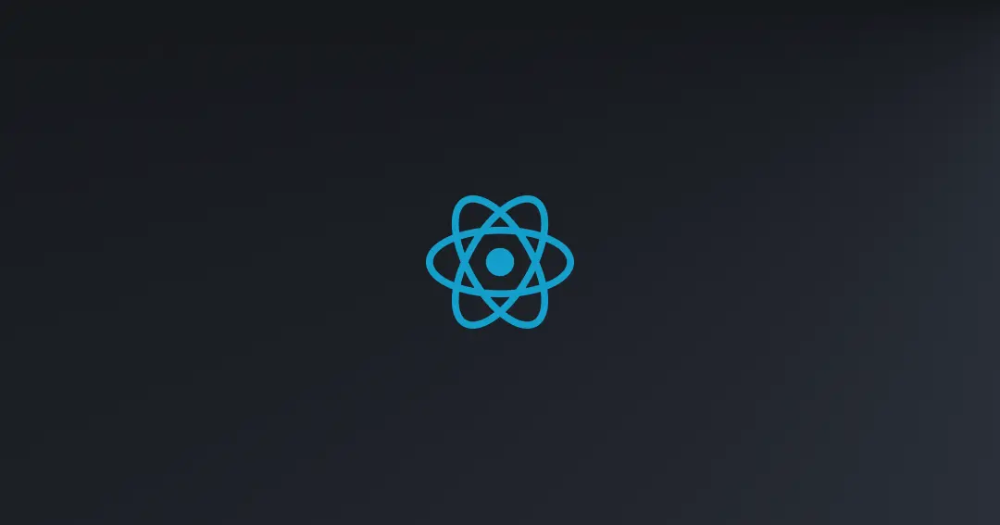
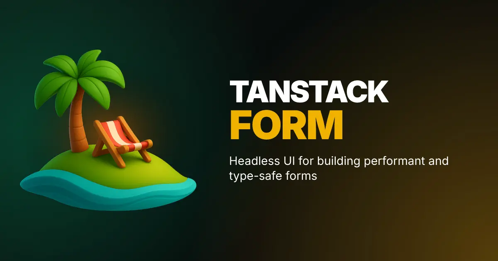
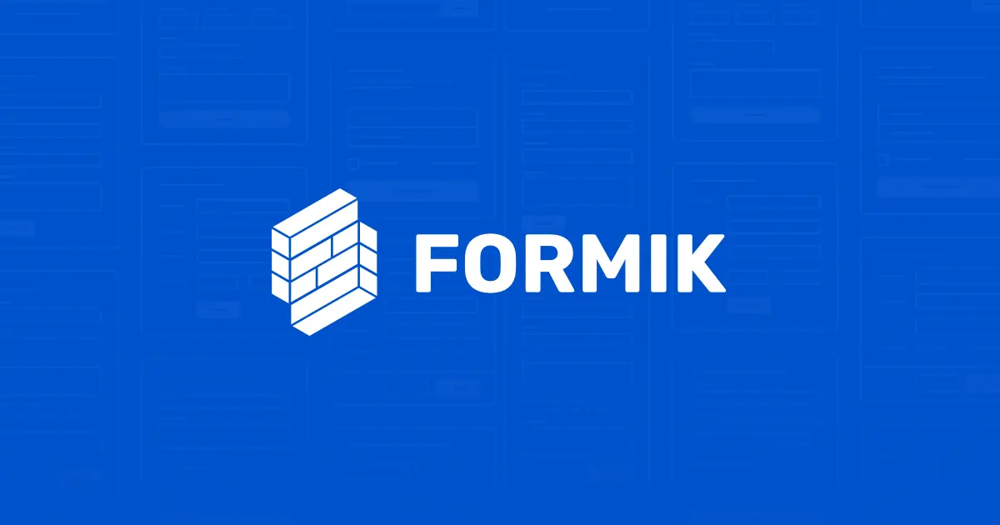
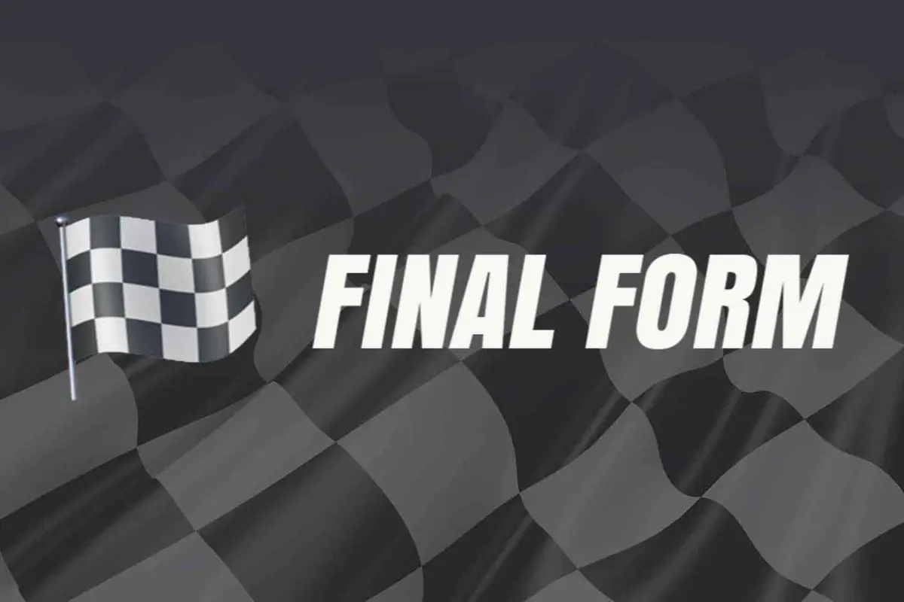
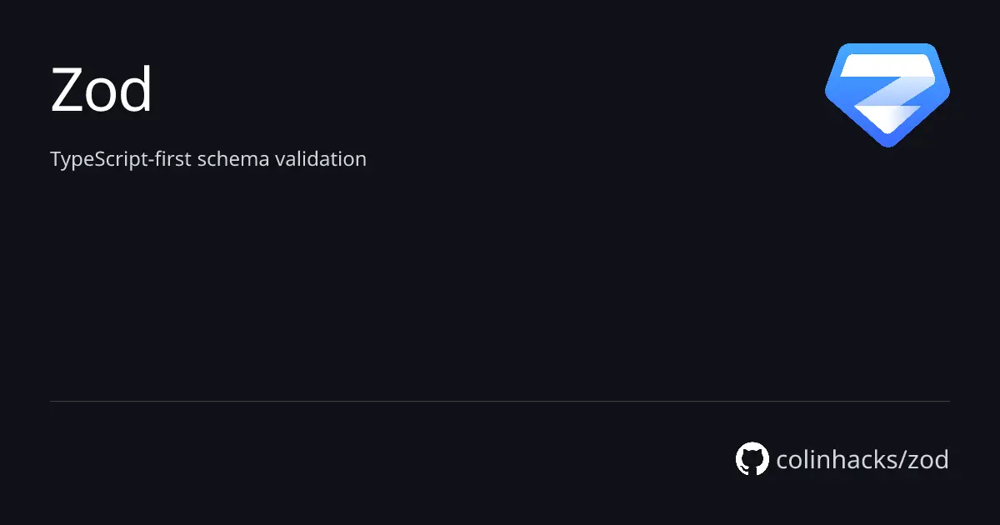
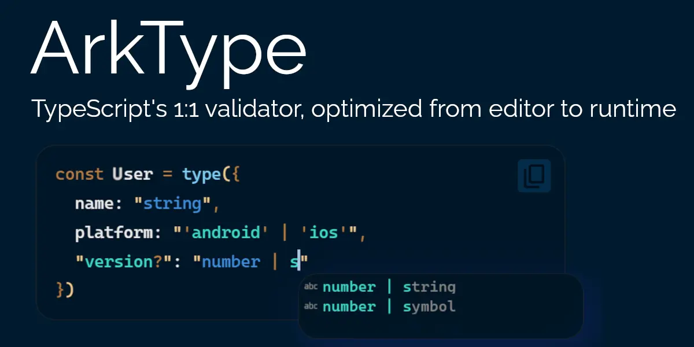
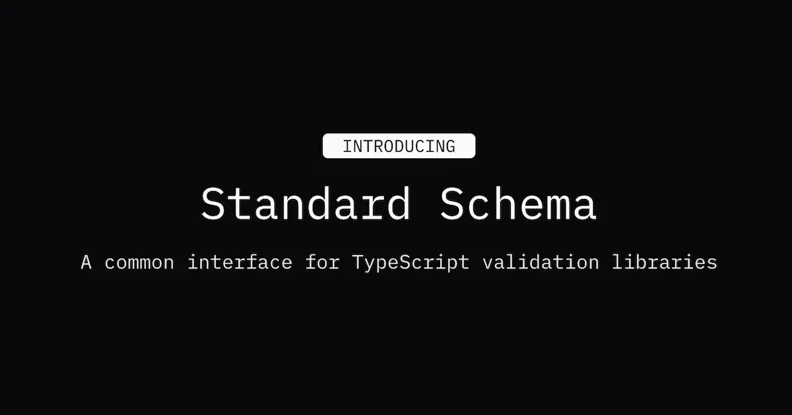
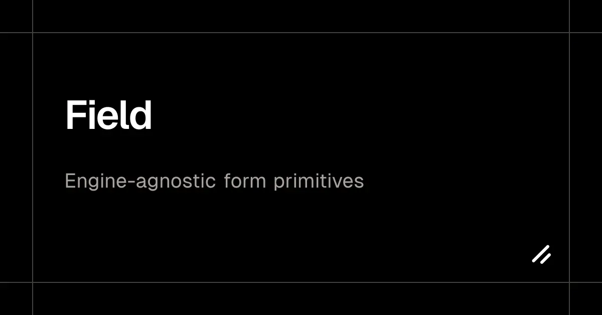
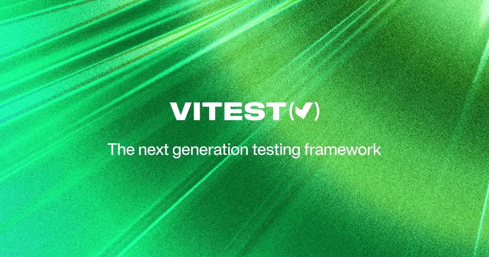
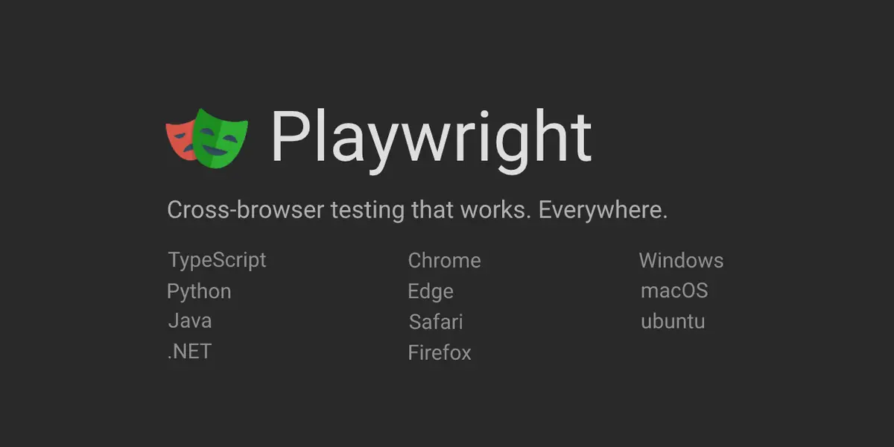

The library owns the client.
The Action is just the wire.
Seven angles on the 2026 React form stack, resolved into one readout. React Hook Form still wins. React's own primitives are a submission layer, not a form layer. Standard Schema made the validator swappable. And every hard pattern collapses into a single question — where do the field values live?
defaultStack.getValues() — new React app, 2026Controller/field.state bridge per component.Where do the field values live? // the one question
Across the two hardest angles, one design choice generates all the others. Conditional fields, wizards, field arrays, the re-render budget and even file uploads are downstream of a single decision each library made about value storage.
outside React
- On unmount
- Value kept. A hidden step in a wizard still holds its data.
- Array rows
- Keyed by the generated field.id —
key={index}is the bug.[39] - Best at
- Big flat forms. The refs are why the render budget stays flat.
store
<fieldset disabled> — React's own primitivesA complete submission layer. An empty form layer.
React 19.0, Dec 2024 — and nothing since.[7] React 19.2.7 is current; there is no React 20.[53]
Owns — the network boundary
- <form action>
- useActionState — pending, result
- useFormStatus
- useOptimistic
Owns nothing — the fields
- field-level validation
- dirty / touched tracking
- field arrays
- error focus management

library owns the client, Action owns the wire. The seam between them is not well supported — and both sides have declined to own it.Next.js default limit on Server Action request bodies.[21] Presign, PUT direct to storage, and let the field carry the object key.
fetch cannot report upload progress, by design.[22] A progress bar in 2026 still means XMLHttpRequest.
Above that it becomes abusive[49] — go multipart, or tus for resumable, unbounded uploads.[50]
Autosave is a debounce plus an ETag precondition, not a merge algorithm.[54]









<Form>; documents RHF, TanStack Form and Formisch side by side.[58]

